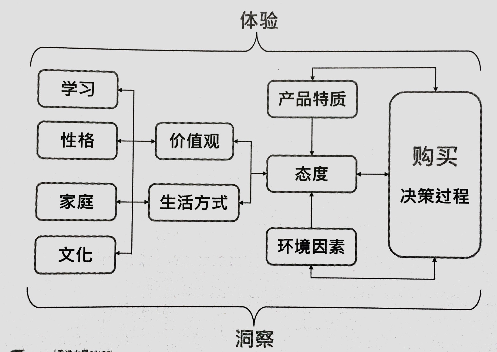
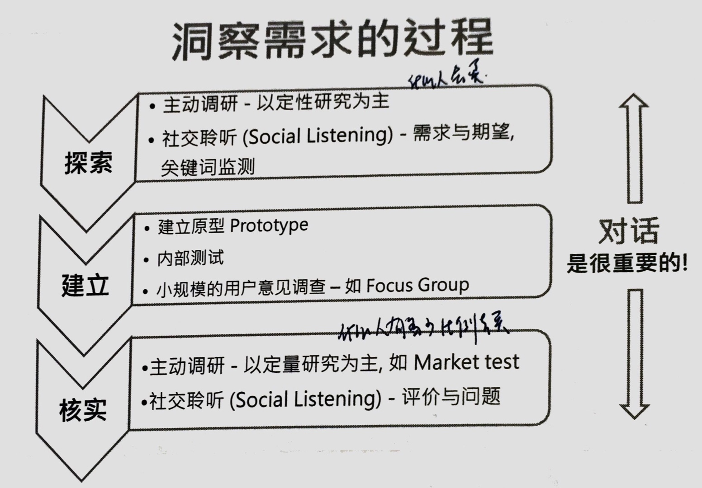
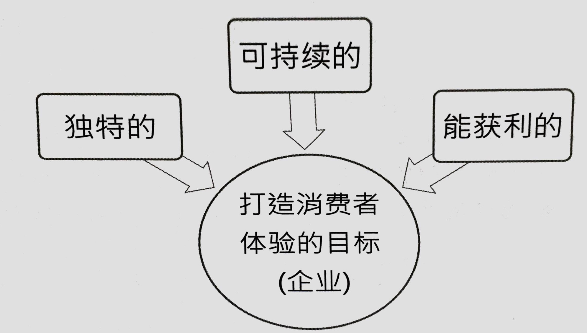
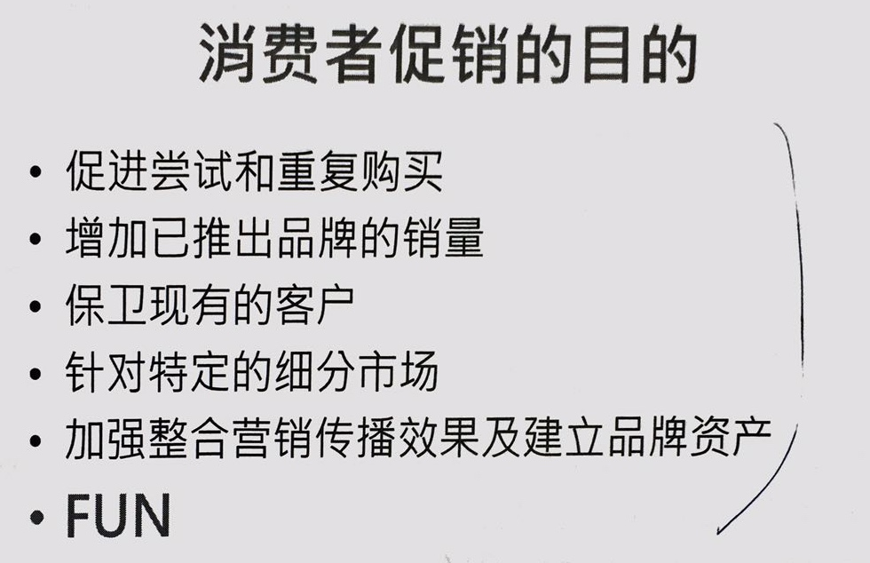
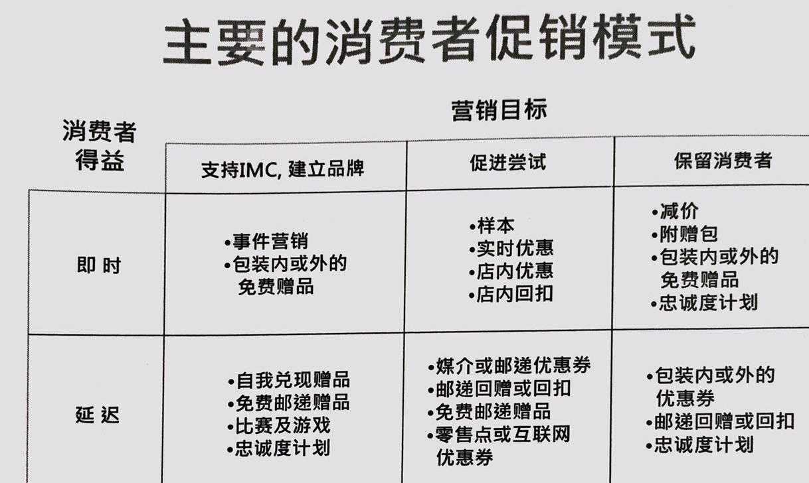

课程编排
- 洞察需求
- 需求背后的推动力
- 需求与购买的关系
- 消费体验与需求
- 促进需求

第一节 洞察需求
需求的本质
- 因人而异，可以是自发的，也可以是由外在因素影响
- 以往和实时需求被满足的程度会影响未来需求，这种满足感是体验的重要部分
- 需求有与产品/服务相关的（理性-功能）和消费者本身相关的（感性-心理和价值观）
感性用来做决策，理性用来做分析。
理论：
- 马斯洛
- ERG理论：生存、关系、成长
市场调研的主要考虑
- 定性（Qualitative）-了解问题的本质、趋势，背后推动力，期望等等
- 定量（Quantitative）-提供可供决策根据的数量化资料
- 事前测试（Pre-test）非常重要，尤其是定量研究
- 所有研究都有误差，样本不是越多越好。 （看意见的分歧程度是集中还是分散）
- 主要的研究方式
- 观察
- 访问
- 实验
- 可以是定期进行，或按需要进行
有关洞察的提醒和反思
- 特别留意最有可能给到特别体会客户的行为
- 洞察针对个人，调研针对群体，尤其是定量研究
- 不要单问客户想要什么，他们自己可能都不知道，观察他的行为
- 对一些类同的情况作出比较可以激发想象力（例如赛车比赛场上维修与快餐厅流程）
- 观察有趣或特殊的行为及背后的原因（如Oreo，孔雀饼干）
- 主要富于表现力的身体语言（眼神、手势等）
- 寻找不同的视角

第二节 需求背后的推动力
态度 Attitude
对一样事物或概念的整体评价
包括对实质因素的思考分析，同时也有感知上的偏好
偏好即有正负面意见之分
态度的复合模型
- 对事物的评价不是来自单一想法，是对其不同属性attributes的综合评价
- 对有不是对所有属性的评价
- 人的思考操作能力有局限，只能对其中一些特别重要的评价才能有意识地同时考虑
- 因此出现复合模型
- Fishbein's Model
- 态度 = 总和 （属性重要性 x 相关属性的评价）
权重 有赖于改变消费者
评价 改变企业自己

态度以外
- 态度只是其中一种影响购买需求的因素，其他的因素还有：
- 外在环境：家庭，文化
- 内在环境：性格、生活方式
- 当时的特殊因素（天气、心情）
第三节 需求与购买的关系
由需求到购买
是否进入下一个阶段基本上仍然是需求主导，在每一个阶段的需求也可以有变化，每一个阶段的消费者感受也是一种体验。
- 购买前： 对产品产生认识：属性/特点，利益，价值观
- 购买：购买决策过程，决策层次
- 购买后：客户关系管理，CRM
产品知识的种类
- 系列的属性/特点
- 系列的利益
- 功能后果
- 心理后果
- 预估风险/危机 Perceived Risks
- 满足追求的价值
- 工具型价值
- 最终价值
预估危机
- 消费者在做出购买决定前预估可能出现的风险
- 风险/危机Risk包括
- 事情发生的严重程度
- 事情发生的可能性
- 例如空难严重但罕见，产品问题常见但影响较小
- 主要分成五种危机
- 功能危机 （效果，质量有问题）
- 身体危机
- 金钱危机
- 心理危机 （自己觉得自己很笨）
- 社会危机 （别人觉得自己很笨）
价值观
- 价值观泛指人的基本生活目标，如成功，稳定等等
- 感性及非实质的
- 工具型价值 Instrumental Value----行为的准则
- 最终价值 Terminal Values ---心理上的倾向
- 每个人都有不同的价值取向，而本身最重视的核心价值会影响购买决定，例如：重视环保所以抗拒过度包装的产品。


与营销传播的关系
- 了解客户重视的元素
- 集中推广
- 提高涉入/关注
- 建立可以关注的环境因素
- 以共同价值来培养忠诚客户
消费体验与需求
打造消费者体验的目标
- 独特的
- 可持续的
- 能获利的

消费者衡量体验的四大要素
- 相关 （产品，品牌）
- 便利 （时间，空间，地点上的）
- 可靠
- 回应

cemex水泥公司的例子：


什么是线索（Cues）？
- 理性线索 产品和服务的硬数据，消费场所的实际环境，宣传单里的资料，价格，折扣，大小，品类
- 感性“机械式”线索 与对象或实体相关的刺激，例如：光线，气味，声音，材质，制服，包装等带来的感觉
- 感性“人本”线索 与人有关的刺激，例如所用的词汇，声调，投入的程度，外貌，身体语言带来的感觉。 话术，笑容
B2B公司特别重视的价值（线索）
- 表现数据
- 属性重要性
- 市场评价
- 现时客户及评价
- 交易价格（竞争情报）
- 附加成本（客户承担的部分）
- 市场占有率
- 企业资料
- 注意同时船体理性与感性含义 （比如说味道一样的公司更容易合作）
接触点包含的元素
- 目的：传递信息？功能性？感受？建立相关性（relevance）？
- 互动机制（包括服务，网站，人员，展示等）
- 情景
- 推动力（正面线索）
- 阻碍（负面线索）

主要阶段和接触点
- 主要阶段
- 期望
- 进入
- 互动
- 离开
- 回顾
- 每个阶段里可以有多个接触点

关键时刻（Moment of Truth）
- 从体验地图里的总舵接触点找到关键时刻
- 是一些跟消费者或者客户有互动的地方，不论体验是正面或负面，其印象都特别长久
- 汽车营销的典型关键时刻
- 第一次听到品牌
- 试驾或其他深入了解
- 付款订购
- 提车
- 维修保养
- 营销人员应在这些关键时刻特别留意和主动出击
第五节 促进需求



